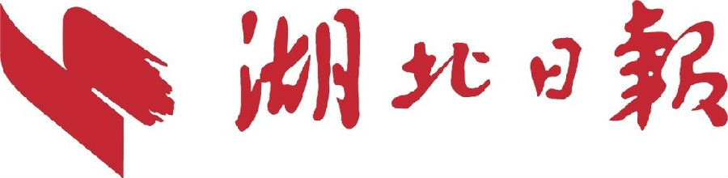
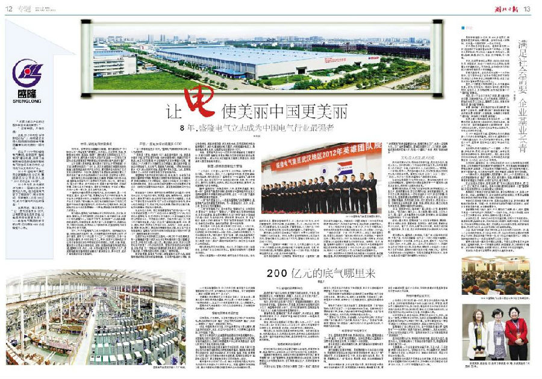

8年，盛隆电气立志成为中国电气行业最强者
湖北日报 2013年2月27日 第十二版专刊《让电使美丽中国更美丽》
数字报链接：http://hbrb.cnhubei.com/hbrb/20130227/

“在跨入新兴产业的过程中有没有遇到麻烦？”
“没有麻烦，只有机遇！”
这是2012年央视“全球财经论坛”上，央视著名主持人陈伟鸿与盛隆电气集团董事长谢元德的一段对话。
成立于1979年的盛隆电气集团，借助国家“智能电网”建设机遇，实现了由输配电设备制造商向智能电气综合服务商的转变，让传统行业变身新兴产业。
2012年，盛隆电气集团年总销售额达到30亿元，集团武汉分公司成功入选“2012武汉企业100强”。
2013年元月，谢元德被评为第十一届湖北经济年度风云人物。他为盛隆电气定下了新目标：“用8年时间，年销售收入达到200亿元，成为中国电气行业的强者！”
发展跨越，理念革新。“让1度电创造更多GDP，让电使幸福生活更幸福，让电使美丽中国更美丽！”——盛隆电气集团的新年新口号，已扎根在4000余名盛隆人心底。
市场：智能电网的新角色
1979年，在枣阳穷乡僻壤的王城镇，谢元德创办了“513联合公司”，即盛隆电气的雏形。从水泥瓦、五金构件、食品、预制板到电线杆、建筑业、修理厂，谢元德涉足的领域五花八门。直到1984年，谢元德才与电气设备行业结缘——公司与交通部长江航运管理局在枣阳县城合资创办鄂北电气遥控设备厂。
出乎当地人意料的是，谢元德并不甘于止步枣阳县城，“对不起，我要移师武汉！”1991年，武汉东湖高新区被国务院首批批准为国家级高新技术产业开发区，谢元德将目光投向了这片生机无限的热土。1992年，盛隆电气集团在东湖高新区建立了现代化的厂房，对产品结构进行了优化升级，正式进军大武汉。
国家电网公司总经理刘振亚主编的《智能电网技术》中说道，智能电网是电气行业紧跟时代节拍的一场大戏。谢元德认为，登上这个舞台，参与这场大戏，盛隆才能与时俱进，可持续发展，只有认清自己的角色，演好自己的角色，才能在大舞台、大戏中占有一席之地，甚至占有优胜之地。“智能电网建设需要很多智能产品、技术和服务，是一个非常宽泛、复杂、巨大的工程，需要电力电气行业的积极参与，集中全社会的智慧和努力，仅有国家电网和南方电网这样的垄断央企是不够的。”谢元德认为，现在我们国家仍然处于政府主导型的市场经济，建设智能电网，政府和央企是唱主角的，但是智能电网这台大戏还需要增加一个角色，那就是机制更灵活的实力派民企。
谢元德说，盛隆电气拥有国企所没有的机动性、灵活性、创新性、草根性。不但吃苦耐劳，还敢想敢干，敢于破旧立新，做第一个敢吃螃蟹的人。你放不下架子，我没有架子；你挑肥拣瘦，我肥瘦通吃；你嫌苦怕累，我用户第一；你因循守旧，我随机应变，不断改革创新。做其他企业不能做的事，挖掘智能电网细分市场，积小胜为大胜。
如今，34岁的盛隆电气已成为中国领先、提供输配电设备、系统及解决方案的厂商，业务遍布国内所有省市及海外20多个国家，拥有12个子公司，5个工厂，1个研究所，20多个分公司或办事处，共4000余名员工。其中，北京子公司和武汉子公司分别在华北和华中市场位居引领地位。天津、上海、东莞、重庆的子公司也分别在华北、华东、华南和西部各市场发展迅速。盛隆在北京、武汉、上海、东莞和重庆建有大型生产工厂，是成套输配电设备领域在全国设厂最多的企业，其中北京、武汉厂房规模均位居全国前列。
产品：1度电如何创造更多GDP
“让1度电创造更多GDP。”盛隆电气掷地有声的口号，让人充满期待。“同样是1度电，创造的GDP，美国是中国的3倍，德国是中国的6倍。在节电增效方面，与发达国家相比，我国还有较大差距。也正是存在差距，才让盛隆电气未来发展潜力无限。”谢元德说，十八大要求大力推进生态文明建设，建设美丽中国，这就是对绿色电气、生态电气、智能电气的呼唤。1度电如何创造更多GDP，核心在技术创新，提高用户用电效率。为此，盛隆陆续推出了一系列自主研发的电力节能环保产品。
据盛隆电气技术总监谢正新介绍，目前，电力、冶金等工业领域大量使用变频器、整流器以及楼宇等使用的电脑、不间断电源、变频空调等会产生大量谐波。谐波会污染电网，不仅增加了电网的供电损耗，而且干扰电网保护装置与自动化装置的正常运行，造成这些装置的误动与拒动，甚至直接威胁电网安全运行。
谢正新举了个例子：若节能灯在使用量所占比重较小的电网中运行，它与白炽灯相比，亮度高、省电、使用寿命长。但若该电网大量使用节能灯，就会发现节能灯损坏率大幅提高。这是由于节能灯是非线性负荷，它产生较大的谐波污染电网，使中心线电流居高不下，降低了电网供电质量，导致用电设备升温、电网线损增加、变配电设备老损。
在企业生产车间，谢正新指着盛隆电气的新产品——“电力有源滤波装置（APF）”、“动态无功补偿装置SVG”说，它们都是由盛隆电气（北京）有限公司与清华大学柔性输配电系统研究所联合开发，不但滤波效果好，还能为用户减少0.1%到10%不等的耗电量，产品广泛应用于基础设施、能源、工业、商业、通讯、楼宇、民用住宅等各行各业，包括电厂、铁路、高速公路、地铁、机场、港口、奥运场馆等国家重点工程。在立足于自主创新基础上，盛隆电气在技术领域与知名跨国公司如ABB、西门子、施耐德等也有密切合作。
在武汉光谷关东科技工业园内，一间200平米的房间里，有一座精确显示整个武汉光谷片区用电情况的大型沙盘模型，在这里，供电卡口问题一目了然。谢正新说，目前，光谷片区的变电站只发挥了70%左右的效用，若进行网络优化和设备改造，过去要建10个变电站才能满足的用电需求，现在只用建7个就足够，不但降低建设成本，还美化了城市环境。
谢正新透露，盛隆电气还有一种智能电力监控产品，能够随时测试用电过程中的各种数据，引导用户高峰时少用电，低谷时多用电，提高供电效率、优化用电方式，在完成同样用电功能的情况下，减少电量消耗和电力需求，从而缓解缺电压力，降低供电和用电成本，让每度电创造更多的GDP。
去年，盛隆电气在光谷一次农民还建房输配电工程建设中，在建设速度、输配电质量和用电效率等各项指标的综合考核中名列第一，成为光谷片区输配电工程的主要建设方，并获准进入国家智能电网建设。
制度：群体老板制给力营销
“大中含小，小中寓大。合中有分，分中有合。统而不僵，分而不散。”为把企业、团队、个人三者利益有机地、紧密地、融洽地结合起来，谢元德创造了“盛隆圣经”——《盛隆电气基本制度文件》，旨在将公司三十多年来成功的体制、机制，进一步制度化、操作化、稳固化、成熟化，使公司运转更规范、更科学，实现盛隆电气的百年辉煌。
翻开“盛隆圣经”，在集团组织、人事、管理制度篇里，有这样一条：“盛隆电气集团的体制，是将具有中国特色的社会主义道路和盛隆的具体情况相结合的体制，是以‘一体三委’为基本组织架构的群体老板制。”“一体”有两层面含义。一层是指盛隆电气集团董事会，是盛隆电气集团的最高管理机构。另一层是指武汉、北京、东莞、上海、重庆分公司的董事会。“三委”即营销委员会、技术委员会、管理委员会，分别简称为“营委会”、“技委会”、“管委会”。“营委”由公司群体老板组成，负责产品营销，是集团发展的火车头；“技委”由生产系统部门负责人组成，负责创新产品、提升质量、降低成本，为“营委”输送、培养人才和“准老板”；“管委”由管理系统部门负责人组成，协调生产和营销，确保内部团结，提升外部形象。“昨日是兵，今日是将，明天率领三军打大仗。人人为公司，更是为自己，千斤担子万人挑，一人的心众人操。我这个董事长比较轻松，在没有贷银行一分钱，没有一分钱外债的情况下，公司业绩超常发展。”谢元德对“营委”高看一眼，这也是盛隆异于其他公司的地方。他说，一般的公司也有营销机构，但营销人员收入都是“工资+提成”，虽然可能所挣不少，但没有自己当家作主的成就感。
谢元德鼓励员工转岗营销。他认为，员工能力达到一定程度后，自然会产生自主创业的想法。盛隆应该帮助而不是阻碍他们创业。
任何人到盛隆干一段时间后，都可注册公司当老板。当老板的条件是：愿意做营销的员工，个人账户达100万元，即可注册营销部，任部门经理，自由招聘人员；个人账户达300万元，可注册营销处，任处总经理，下辖营销部；个人账户达1000万元，可注册营销公司，任公司总裁或董事长，下辖营销处。
谢元德让上级部门自由组合下级部门，并要求上级部门对下级部门亏损负全责。同时，他要求营销部每年向上级交纳6万元，营销处每年向上级交纳7.5万元，营销公司每年向上级交纳15万元。
如果一个营销部一年赚了100万，它只需上缴6万元，剩下94万元都是自己的。因利益分配十分清晰，各层级“老板”的工作热情很高。谢元德说，盛隆电气是一个创业平台，为各营销单位提供资金、产品、技术和市场服务。
当市场份额做到一定程度后，有些老板会“小富即安”，躺在业绩簿上睡大觉。为解决这个问题，他每年5月对各类老板进行“能力体检”，凡注册资金不足者，就会降级、清算或销户。
作为小老板中的佼佼者，今年34岁，毕业于中南民族大学的李洪英在香港与凤凰卫视著名主持人吴小莉有一次对话。“据说你是第一个拿400万订单的人，创造了很多盛隆奇迹，你是怎么做到的？”面对吴小莉的发问，李洪英说，一靠领导支持，二靠自身努力。2001年，她刚走出校园一无所有，时任武汉营销二处总经理的谢清伦对她赏识有加，在商务、技术、销售、管理等方面进行了全面培养。在大家对大学生做销售持怀疑态度的时候，她成功拿下400万订单，让人刮目相看。2004年，她的个人订单已经过千万，成为集团首批营销专家。
如今，李洪英从业务员转变为北京营销六处总经理、集团董事会董事。李洪英则被盛隆电气集团作为“洪英案例”进行推广，“洪英案例”的缔造者谢清伦说，盛隆不单是工厂，也是一座盛隆大学。工厂培养营销团队，营销团队提升工厂，工厂吸收、培养、输送更优秀的营销人才，形成一个循环。“未来‘洪英’将越来越多！”
文化：立人己立，达人己达
西方经济理论认为，市场经济的参与者，是主观为自己，客观为他人。这种理论助长了市场经济的负面作用。而中国儒学圣人孔子说过：“仁者，己欲立而立人，己欲达而达人。”意思是，一个讲究仁爱的人，要使自己建功立业，发达有成，就必须同时关心他人的生存发展。帮助他人实现“立功”、“立业”，“通达”、“发达”。孔子这一思想，在盛隆电气集团得以验证。
站在年总销售额30亿元的台阶上，勇敢地喊出进军200亿元的战略目标，盛隆的信心源自盛隆哲学——“帮助别人就是成全自己，成功他人定能实现自我。”
董事长谢元德说，作为电气设备供应商，在传统概念上，只是生产、提供质量合格、安全适用的设备，保证电能通能用。至于你怎么用，耗高耗低，一度电创造多少GDP，那是你的事，与我无干系。盛隆的理念就把商家与客户，供方与用方，企业与社会，原有的隔阂、界限打破、拆除，对方成为同方，两家成为一家，不断拓宽企业的资源、能量、市场、领域、机会，真正让电成为幸福生活、美丽中国的动力和神经。
34年，盛隆的文化一脉相承。“真心圆你一个梦，真情帮你去成功。”察己知人、推己及人，急人所急，帮人所需，以至先人后己、厚人薄己，成为集团的文化伦理、哲学理念，并深深影响到盛隆的创业、立业和经营发展。
由这一基本理念，盛隆创造了以千方百计帮就业、帮创业、帮立业为核心目标，温暖和谐，昂扬向上，追求卓越，奉献社会的企业文化。建立了“信任、关爱”的企业伦理。形成了诚实做人，踏实做事，走正道，成正果的机制制度和良好的风气与氛围。
谢元德认为，盛隆最大的成就，不是厂房、设备旧貌换新颜，不是产值、利润成倍翻番，也不是个人收入财富大幅增长；而是在盛隆这个大学校里、大平台上，培养、帮助了一代代年轻人就业，创业，立业；成事、成人、成才。不仅使他们个人、家庭的命运发生了根本性改变，而且带动、帮助家乡和远近一方的父老乡亲扩大就业，帮助地方解决就业之难，为国分忧。“盛隆电气集团的生命力在盛隆哲学，它是集团最重要的软实力、竞争力，也是集团长盛不衰的凝聚力和创造力！”
200亿元的底气哪里来
□李高产
一个现年销售额方达30亿元的公司，敢狂言十年内将销售额做到200亿元，成为国内电气行业最强者。不了解盛隆的人，都以为盛隆“吹牛皮”、“说大话”。
但董事长谢元德并不是个爱说大话的人，34年来他一直埋头苦干，鲜在媒体抛头露面，可以说是一个极度低调的人。一个极度低调的人，说出了一个极度高调的目标，让人颇感意外。
盛隆的底气来自哪里？200亿元目标的背后，又有哪些市场和管理上的逻辑？
智能电网带来市场扩容
没有困难，只有商机。这是谢元德经营公司几十年来的经验。他总能找到社会的“痛点”，然后寻找方法根除“痛点”。实际上，谁根除了“痛点”，谁就获得了商机。
过去，中国发展水平不高，对产品的要求也不那么精致，满足基本功能就好。现在，社会对产品的要求，不仅要满足基本功能，还要智能、节能。
电力行业的现代化是美国绿色能源经济转型战略的核心，而智能电网技术是实现这一目标的关键。智能电网可以把用电设备终端信息化，能够及时提醒用户什么时候用最经济，也可以把用不了的电反馈到电网里。
智能电网建设在中国目前处于初级阶段，未来5到10年将会成为中国绿色能源经济转型战略的重点。智能电网建设需要许多新设备、新技术和新标准，涉及发电、输电、变电、调度等各个环节，每个环节都有大量的市场机遇。盛隆所在的监控、输配电设备环节，更是智能电网建设不可或缺的一部分。
谢元德早早认识到了这一点，他认为智能电网是电气行业从传统行业走向新兴产业的巨大平台。目前，盛隆正加强研发力量，推出与智能电网建设相配套的产品和系统解决方案。
与日递增的品牌影响力
品牌是靠广告打出来的，更是靠市场做出来的。十年前，盛隆这样的企业，中国有很多，规模小，不出名，谈不上生产能力，经济实力差，社会认知度和同行公认度都不高。
如今，许多同行企业都不存在了，但盛隆却越做越大，成为行业中的佼佼者。盛隆相关人员透露，现在同行说盛隆坏话的人少了，来盛隆参观的人多了。同行们普遍感觉，盛隆现在是“无孔不入”，在哪儿投标都有盛隆的影子。
更重要的是，盛隆拓宽了两大“护城河”。伟大的企业，都有伟大的护城河，这个“护城河”的基本标志有两条：一种是低成本，一种是大品牌。
现在，同行们总是感到不可思议：那么大的一个工厂，价格为什么那么低？北京公司从一个无名小卒，成为名列前茅的行业领军企业，靠的就是“低成本、大品牌”的核心竞争优势。
谢元德认为，性价比是最基本的市场法则。低质低价是自弃，低质高价是自杀，高质高价是常规，高质低价是超级竞争利器。盛隆一直采取高质低价策略，温柔的渗透市场，品牌影响力越来越强。
独特成熟的体制模式
好的体制可以保证企业沿着正确的方向前进。所谓好的体制，就是用好的方式和办法，以小的代价实现计划、达到目的。
盛隆的体制很灵活，能够应对变幻莫测的外部市场。“群体老板制”和“三委”管理架构，是盛隆体制的核心和主体。这种体制能让众多老板各得其利、各负其责，能让生产、管理和营销协同作战。
大部分企业，营销人员的收入都是“工资+提成”，虽然所挣不少，但没有自己当家作主的成就感，且企业不鼓励甚至严禁营销人员开公司当老板。
盛隆鼓励技术和管理能力较强的员工转岗营销，自己注册公司当老板。谢元德认为，年轻人来到盛隆，不是来做工人的，而是来学本领的，本领学会了自然就想创业，盛隆应该帮助他们。
帮助员工成功不是说说就算了，盛隆通过搭建“三委”组织架构，为员工创造了一个创业成功的支持系统。各群体老板只要能拿到订单，资金、产品和服务都可由盛隆提供。“三委”各司其职，互相配合，协同作战，共同推动着企业成长。“营委会”负责营销，保证销售，为产品寻找出路。“技委会”保障产销平衡，提升产品质量，降低生产成本。“管委会”协调、服务“营委会”和“技委会”，确保公司内外安全和有效运转，不断提升品牌价值。
“能信营创”的经营方式
过去，盛隆做生意要本钱，要流动资金。现在，盛隆创造出了一种“能力+信用”的生意模式。这种生意模式让盛隆至今主要依靠自有资金发展，不欠银行一分钱贷款。
胡玉琼是这个模式的典型代表。谢元德准备在盛隆内部复制更多的“胡玉琼”。
谢元德建议各群体老板，用盛隆的能力与他们自己的能力，用盛隆的信誉结合他们自己的信用来做生意。他认为，“营”是指经营，不是简单的买卖、交易，而是以能力和信用，用心、用意、用智慧去做。“创”是创造，用创意、创新、创造的精神来营销。
靠资金来做生意，企业总有成长边界，而依靠给客户提供专业系统的解决方案，则可提高客户的粘性，带来重复交易。帮助客户解决问题，自己才会成功，这种生意模式正是盛隆哲学在经营方式上的延伸。
利他向善的企业文化
企业成长分四个阶段：第一阶段，靠性价比超高的产品，精心周到、及时的服务赢得客户和市场；第二阶段，靠管理、制度和员工激励控制市场；第三阶段，靠自主研发和开放引进技术创新产品去主导市场；第四阶段，靠企业文化强化组织记忆，让利益相关方认同企业的社会价值，实现基业长青。
许多专家在讲，做百年企业，要靠好的企业文化，实际上就是这个意思。所谓好的企业文化，实际上是指能凝聚团队，提高品牌影响力和客户认同的一种力量。这种力量若变成一种信仰，就会大大降低企业的经营成本，提高企业的经营绩效。
盛隆确立了自己的企业文化，集中体现在其确立的“盛隆哲学”——支持别人，就是完善自己；帮助别人，就是成全自己。这种企业文化极富生产力，盛隆的许多员工认为来到盛隆是“找到组织了”。
西方经济理论认为，市场经济的参与者，是主观为自己，客观为他人。这种理论助长了市场经济的负面作用。而盛隆却很好地克服了这一点。
长期看来，一个企业能给社会留下的，不是产品，不是财富，而是它的企业文化。这种企业文化，可以凝聚共识，激励员工，推动企业成长，也可启示社会，理解企业的本质，提高企业的社会价值认同。
盛隆哲学并非是孔子思想在企业的复制，而是干出来的经验哲学在盛隆的理论化和制度化，这种理论化的过程正好与孔子“达人己达，立人己立”的思想达成了一致。
满足社会需要企业基业长青
□李高产
虽然年销售额30亿元，有4000多名员工，但盛隆集团及其创始人谢元德，却并不为世人所熟知。说他是一名隐形冠军，一点也不为过。
作为原生态的民营企业，盛隆集团已有34岁，远远超过了中国民营企业的平均寿命。关于基业长青的秘诀，可以说是人言言殊，终无定论。战略、品牌、渠道、执行力、资金、技术等等，不一而足。
其实，这些要素都是必要的，他们之间的相互作用、相互配合，构成一个有机的生态系统，滋养着企业的健康成长。不同的是，企业成长的不同阶段，对某种要素的要求有所偏重。
在谢元德看来，企业的成长总有一个方向和目的，这个目的决定了企业在市场上的行为和作为，决定了企业在社会上所扮演的角色，决定了企业家如何管理和要求自己的员工。
显然，一个眼里只有利润的企业，不可能基业长青。因为，它可能为了利润不择手段，使用伪劣材料、压榨员工、打价格战等，在市场上扮演一个“破坏者”的角色。
相反，若一个企业不仅为了利润，更为解决社会问题，不断创新产品；不为节省成本，压榨员工，而始终站在员工立场上，帮助员工成功，则更多发挥的是“建设者”的角色。
所谓“破坏者”，其实是说它输出更多的是“负能量”，公益性弱。所谓“建设者”，其实是强调它输出的更多是“正能量”，公益性强。长寿的公司都是“建设者”，短命的公司都是“破坏者”。
世界上最长寿的组织是教堂和大学，一个重要的原因，就是这两个组织并非以盈利为目的。伟大的公司，做的都是解决社会瓶颈的生意，旨在“减轻社会疾病”。利润只是社会考核企业的工具，并非企业存在的价值。
从1979年诞生那天起，盛隆的企业文化里就参入了许多公益性的基因。成立之初，盛隆提出了“为四化建设出力，为人民幸福流汗”的口号。依靠这个口号，盛隆在“割资本主义尾巴”的运动中生存了下来。
尝到甜头的谢元德悟出了一个道理：人要行善，多做好事，要成为社会的“建设者”，谁都会变成你的资源和资本，帮助你成长。相反，就会变成你的成本和包袱，妨碍你成长。这其实就是现在盛隆哲学“立人己立，达人己达”的萌芽。
及至现在，盛隆提出“让一度电创造更多GDP，让电使幸福生活更幸福，让电使美丽中国更美丽”的新战略口号，其实里面也都潜藏着它要输出更多“正能量”，为社会做更大贡献的意思。参与智能电网建设，研发节能新产品，优化电站网络等，都是其输出“正能量”的行动实践。
一个伟大的人，都是能帮人成功的善人、好人。一个成功的企业，也必然要能根除社会“痛点”，帮人成功，树立德行。但是，做善事，帮助人，单靠好的愿望是不够的，必须打造平台，建立制度。
在企业成长过程中，盛隆还将“帮”字内化到企业管理中，把“立人”、“达人”制度化、机制化。创业平台制、群体老板制和“三委”管理架构，正是盛隆哲学在企业组织建设上的体现。
盛隆的工厂既生产优质高效的产品，更是培养优秀人才、高级人才的大学。任何人到盛隆工作，在学成技术和管理本领后，只要符合盛隆规定的条件，即可转岗营销，注册公司做老板。
老板们只要有能力拿到订单，盛隆还会提供资金、技术和服务，帮助他们做成生意。这样一来，即使资金不够雄厚但能力较强的人，也可以当家做主做老板，并不断发展壮大。
因能帮助年轻人就业、创业、立业，帮助员工成事、成人、成才，盛隆不再是一个单纯的企业，而变成了一个创业系统。在这个系统里，任何一名员工只要有才干、肯努力，就有机会圆上老板梦。
企业的成长是一种内在和外在的双重较量。仅有外在市场的成功、渠道的拓展、品牌的延伸，没有内在能力的提升、制度的激励、员工的努力，外在市场早晚会收缩。相反，而如果企业内在能力很强，制度能有效激励，员工努力工作，企业的市场张力将会越来越强。
产品“卖点”和顾客“买点”的对接，企业目标和员工目标的一致，是一个企业成功的根本。作为社会中的一员，当企业抱怨社会提供的发展机会不多时，是否应该静下来想一想：这个社会的痛点是什么？我能为祛除痛点做些什么？我是否帮助员工实现了梦想？
董事长谢元德一直在思考着这些问题。不管这些思考是否完全转变成了盛隆的实践，但一个怀揣社会抱负、救世愿望，致力根除社会“痛点”，向内和向外都输出“正能量”的企业，其寿命不可能是短暂的。
我坚信：凡是被社会需要的，都是可以基业长青的。
 返回
返回